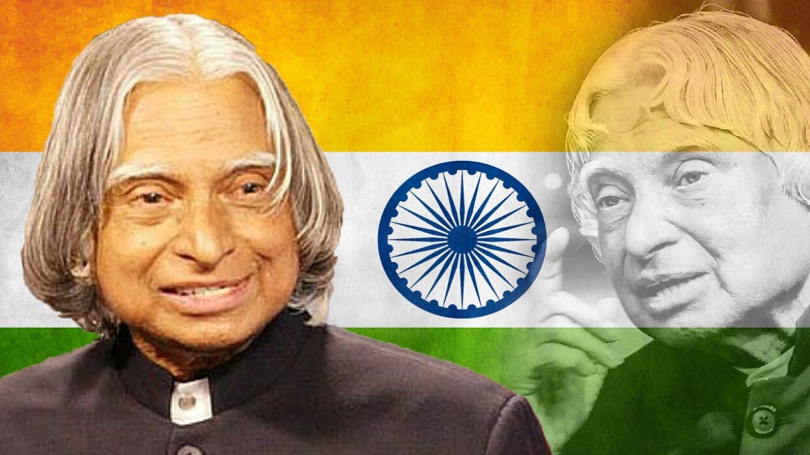

Abdul Kalam
Missile Man of India

Former President of India
Here's a time line of Kalam's life:
- 1931 - Avul Pakir Jainulabdeen Abdul Kalam was born
- 1955 - Kalam moved to Madras to study aerospace engineering in Madras Institute of Technology.
- 1963 - He visited NASA's Langley Research Center in Hampton, Virginia; Goddard Space Flight Center in Greenbelt, Maryland; and Wallops Flight Facility.
- 1969 - Kalam received the government's approval and expanded the programme to include more engineers.
- 1999 - Wings of Fire: An Autobiography by A P J Abdul Kalam, Arun Tiwari; Universities Press
- 2002 - Kalam became the 11th President of India, succeeding K. R. Narayanan.
- 2015 - Kalam travelled to Shillong to deliver a lecture on "Creating a Livable Planet Earth" at the Indian Institute of Management Shillong. While climbing a flight of stairs, he experienced some discomfort, but was able to enter the auditorium after a brief rest. At around 6:35 p.m. IST, only five minutes into his lecture, he collapsed. He was rushed to the nearby Bethany Hospital in a critical condition; upon arrival, he lacked a pulse or any other signs of life. Despite being placed in the intensive care unit, Kalam was confirmed dead of a sudden cardiac arrest at 7:45 p.m IST. His last words, to his aide Srijan Pal Singh, were reportedly: "Funny guy! Are you doing well?"